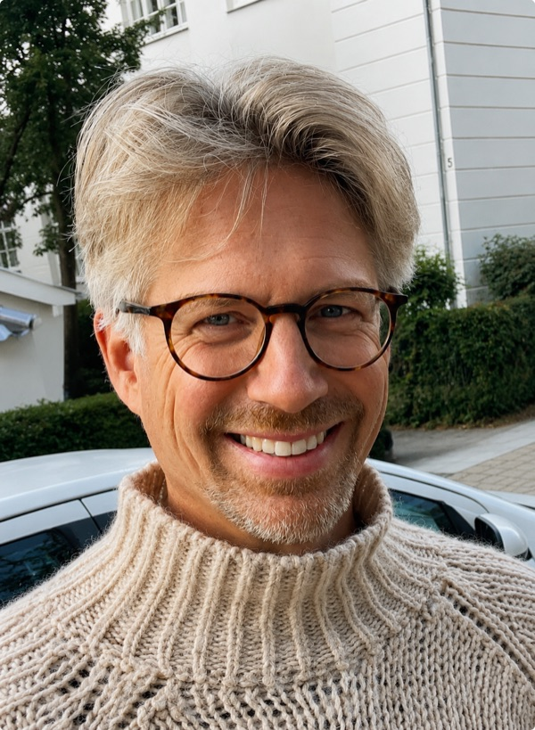

✦ Din behandler
Christian Mikkel
Min vej til healing, bevidsthed og tantra
Min spirituelle rejse
Jeg tror på, at vi alle har en sjæl, og at kroppen blot er et hylster, vi låner for en tid, indtil den dag, vi skal herfra. Den overbevisning har fulgt mig siden barndommen, måske fordi jeg som fireårig oplevede noget ganske særligt under en næseoperation. Her oplevede jeg, at min bevidsthed svævede op over min egen krop, samtidig med at jeg opfangede, hvad der foregik på operationsstuen.
Jeg tror, at denne oplevelse var med til at vække min interesse for det spirituelle og for de sider af livet, som endnu ikke kan forklares af videnskaben. Siden da har jeg haft flere spirituelle oplevelser, som har sat dybe spor i mig og været med til at forme mig som menneske.
Healing – vejen til indre balance
Healing har haft en afgørende betydning for min personlige udvikling. Gennem healing har jeg oplevet, hvordan mit liv gradvist er kommet i en balance, jeg aldrig havde forestillet mig mulig.
I begyndelsen reagerede min krop voldsomt med spasmer, gråd og ukontrollerbare latteranfald. Det var intense oplevelser, hvor følelser og gamle traumer syntes at komme til overfladen og blive forløst. Over nogle måneder oplevede jeg en markant forandring i mig selv og min måde at være i verden på.
I dag bruger jeg healing som et redskab til at finde tilbage til min indre balance og skabe ro i hverdagen. Jeg er et meget følsomt menneske, der mærker både mine egne og mine omgivelsers indtryk stærkt. Derfor har jeg lært, hvor vigtigt det er at give mig selv plads til at finde ro, give slip og genoprette balancen.
Bevidsthedstræning – forstå dig selv og dine tanker
Min interesse for bevidsthedstræning udspringer af min nysgerrighed på psykologi og de tankeprocesser, der påvirker vores følelsesliv og vores måde at opleve verden på.
Jeg har erfaret, at healing kan hjælpe mig med at genfinde min indre balance, men hvis jeg ikke samtidig forstår mine tanker og deres indflydelse på mine følelser, risikerer jeg at skabe ubalance igen. Derfor ser jeg bevidsthedstræning som en vigtig del af mit personlige arbejde og som en værktøjskasse, der hjælper mig med at skabe en sundere bevidsthed i hverdagen.
Ligesom kroppen har brug for den rette næring, har vores bevidsthed det også. Det handler både om, hvad vi vælger at give den næring gennem vores tanker, fokus og handlinger, og hvad vi bevidst vælger ikke at give plads til. Ved at blive mere opmærksomme på vores tankemønstre kan vi lære at tage større ansvar for vores følelsesliv og skabe et stærkere fundament for indre ro, balance og livsglæde.
Tantra – nærvær, intimitet og nydelse
Det seksuelle har altid været en vigtig drivkraft i mit liv, og jeg har gennem årene været nysgerrig på de mange facetter af seksualitet og menneskelig intimitet. Denne nysgerrighed har ført mig til tantra, som jeg i dag finder særligt fascinerende.
For mig handler tantra om langt mere end det seksuelle. Det handler om at forene opmærksomhed, nærvær og nydelse og om at være fuldt til stede i mødet med et andet menneske. Om at turde sænke tempoet, give slip på forventninger og i stedet mærke det, der opstår i nuet.
Jeg er især optaget af det dybe nærvær, der kan opstå mellem mand og kvinde, når begge tør være åbne, sansende og til stede uden at skulle præstere eller leve op til bestemte forventninger. Jeg tror, at denne form for intimitet kan åbne for en dybere forbindelse, som mange sjældent oplever i deres hverdag eller i deres parforhold.
For mig er tantra en mulighed for at udforske intimitet på et dybere plan, hvor kontakten til kroppen, sanserne og det andet menneske får lov til at fylde mere end tankerne og forventningerne.
Mit formål med behandlingerne
På tværs af healing, bevidsthedstræning og tantra er mit ønske det samme: at hjælpe mennesker med at komme tættere på sig selv.
Jeg ønsker at skabe et trygt rum, hvor der er plads til at mærke sig selv, udforske sine følelser og sin krop, give slip på det, der tynger, og styrke kærligheden til sig selv.
Mit håb er, at de mennesker, der kommer hos mig, går herfra med en dybere forbindelse til sig selv og livet – og med mere ro, nærvær, selvkærlighed og livsglæde.
Lad os tage en snak
Book tid